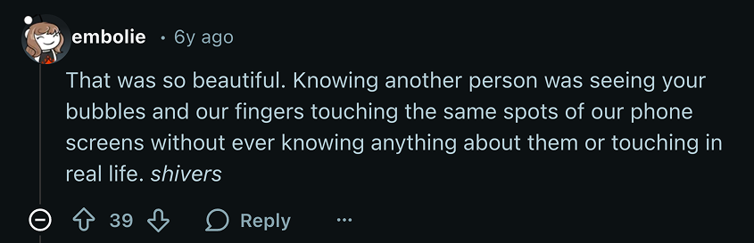
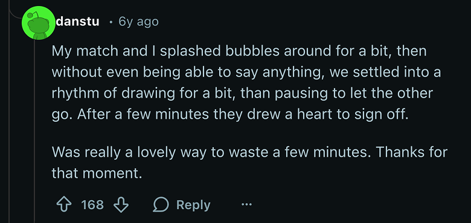
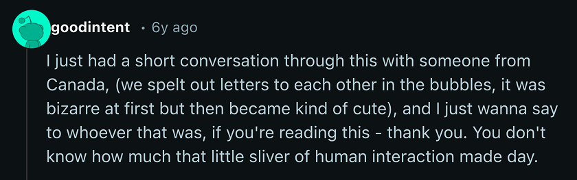
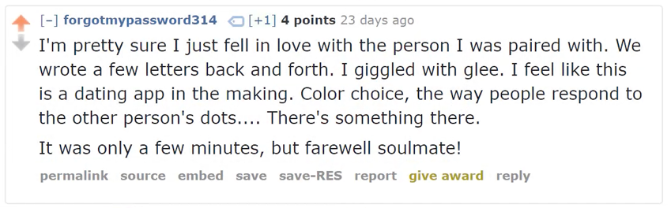
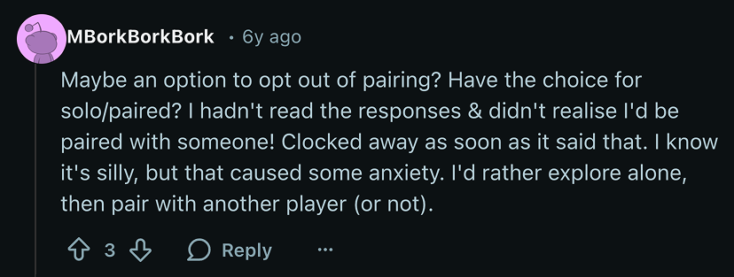
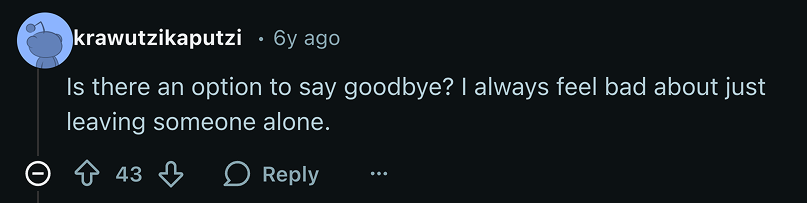
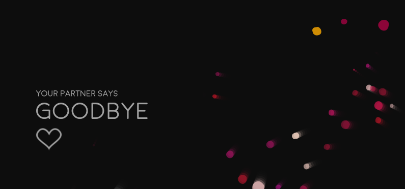
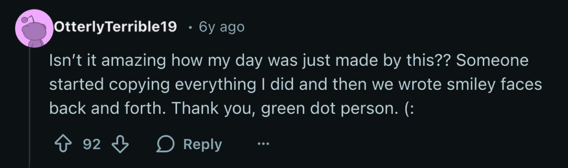
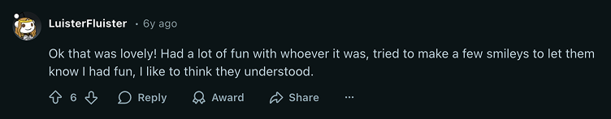
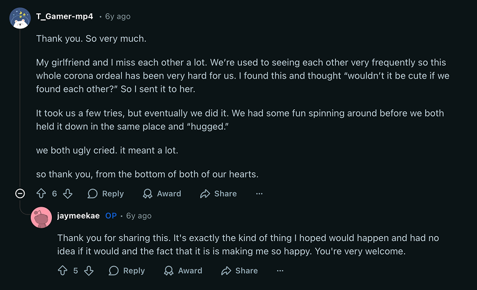

Flock is a multiplayer online art experience, where people create clouds of bubbles and play with them. Simultaneous visitors are paired up to play together - an opportunity for a socially distanced connection with a stranger.
I created this personal project during lockdown and you can visit it here.
Concept
I'm fascinated by the possibilities within multi-user interaction. During lockdown I created this online art project to provide people with a way to experience human connection even at a distance.
People landing on the site at the same time are paired up to play together. They throw bubbles around the screen which interact with each other.
Visuals
I used p5js to code the main visuals in Flock.
The bubbles have various behaviours that are inspired by flocking algorithms as developed by Craig Reynolds and previously coded by Daniel Shiffman. Each bubble looks at others nearby and adjusts its own behaviour based on three metrics, alignment (moving in a similar direction), cohesion (moving towards a similar position) and separation (not getting too close).
I also introduced some randomness to the movements using Perlin noise to add wiggle to the movement.
Adjusting these settings for each individual bubble creates different effects across the whole flock.
Connections with nodeJS and websockets
The fun thing about Flock is that users get paired up so they can interact with each other as they play with the bubbles.
I built a NodeJS backend, hosted it on Heroku, and used socket.io to pass messages back and forth over websockets. The server handles pairings, including timing out if someone's not interacting, and sending information between users.
The bubbles from both participants appear in the same space and interact with each other, creating a shared visual experience.
Human connections
Flock hit the front page of reddit and seemed to genuinely touch people. I think this was especially true as this was during lockdown, a time when many were missing human connection.
One participant even said they felt like they had fallen in love with the person they were paired with, and lightheartedly referred to them as their soulmate.




Responding to feedback
Some commenters had suggestions for the app, which I implemented.
One person asked for pairing to be optional, saying it had given them some anxiety to be paired automatically and that they wanted to try it out alone first. This made a lot of sense so I added a dialogue box on pageload, that allowed users to opt out of pairing.


Another commenter said they felt bad to leave without saying goodbye. I didn't want to open up the possibility of full conversation but I added an option in the menus which floats a "goodbye" message on your partners screen.


Analytics
I used Google analytics to track use of the site and tagged particular JavaScript events with Google Event Tags so I could dive into detailed evaluation of behaviour on the site.
There were over 86k "pair events" and it's pretty cool to think about all those people who were connected.


Once I implemented the option to opt out of pairing, around 20% of people chose that initially and then many chose to change their pairing mode and go on to play paired up.
It felt good to know I'd allowed those people to enter the experience feeling more comfortable.


Finally...
Some final feedback from reddit:



I then went on to develop another similar project, making use of swirling, spiralised visuals, which was also popular on reddit.